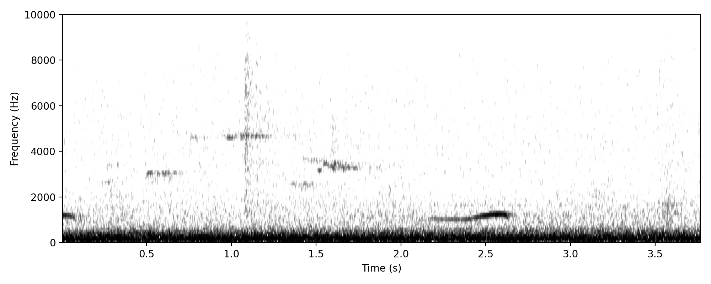
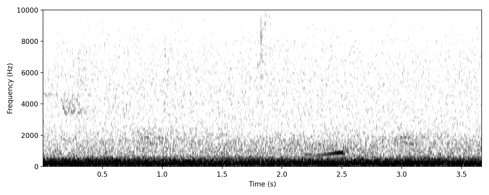
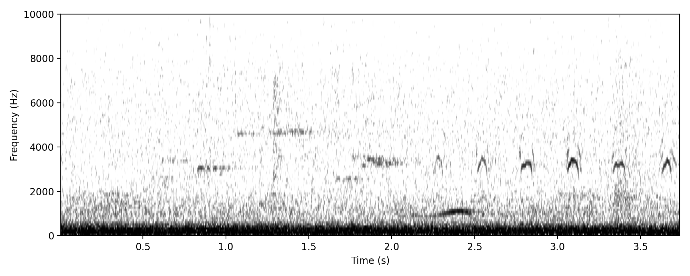
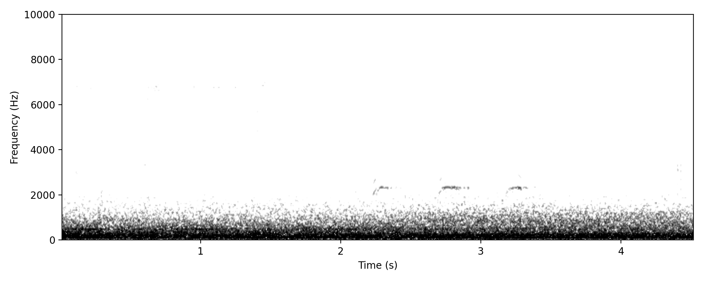
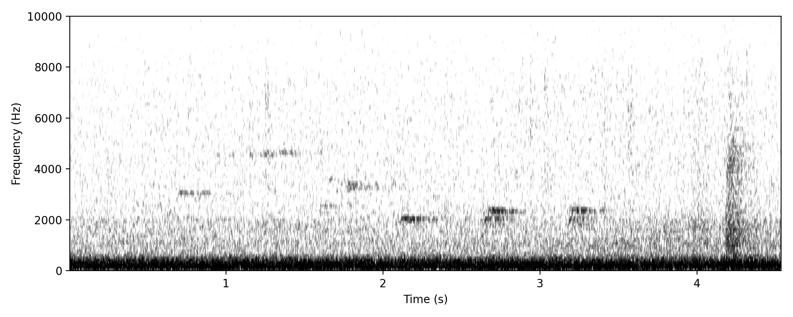
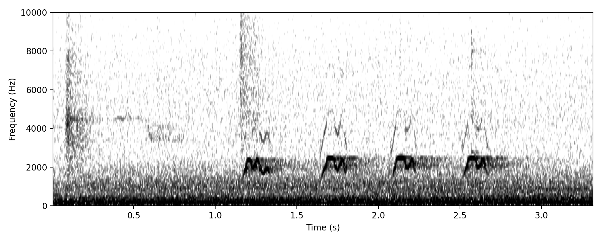
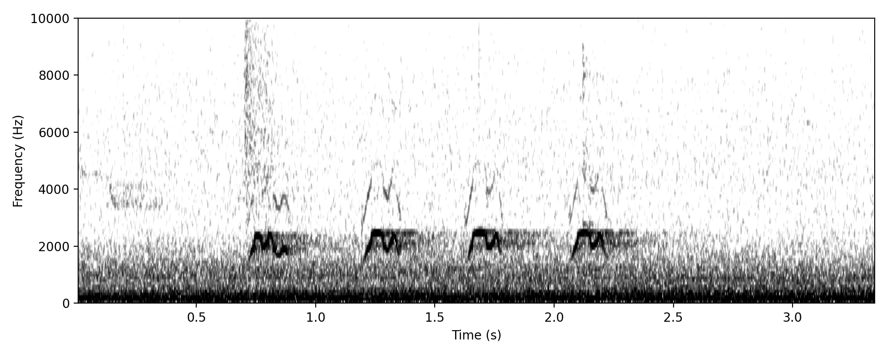
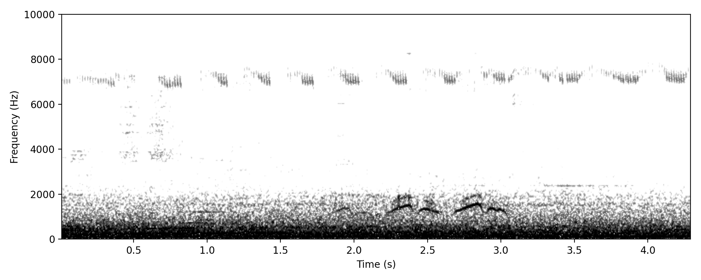

Pacific Koel COO-EE
Project detections: 19 annotations; 1 astronomical night; recorded in October; most recent detection 02 Oct 2021.
Project clips

Delaney Circuit (-27.52149, 153.11081), 02 Oct 2021, 03:14:11, Annotation 3231, Annotator: Richard Fuller, Automated light denoise applied

Delaney Circuit (-27.52149, 153.11081), 02 Oct 2021, 03:13:15, Annotation 3199, Annotator: Richard Fuller, Automated light denoise applied

Delaney Circuit (-27.52149, 153.11081), 02 Oct 2021, 03:13:47, Annotation 3220, Annotator: Richard Fuller, Automated light denoise applied
Pacific Koel KEEK
Project detections: 3 annotations; 2 astronomical nights; recorded in March, October; most recent detection 20 Mar 2026.
Project clips

Delaney Circuit (-27.52149, 153.11081), 20 Mar 2026, 21:54:43, Annotation 970, Annotator: Richard Fuller, Automated light denoise applied

Delaney Circuit (-27.52149, 153.11081), 02 Oct 2021, 02:04:11, Annotation 2511, Annotator: Richard Fuller, Automated light denoise applied
Pacific Koel WURROO
Project detections: 9 annotations; 2 astronomical nights; recorded in March, October; most recent detection 20 Mar 2026.
Project clips

Delaney Circuit (-27.52149, 153.11081), 02 Oct 2021, 02:50:36, Annotation 2866, Annotator: Richard Fuller, Automated light denoise applied

Delaney Circuit (-27.52149, 153.11081), 02 Oct 2021, 02:50:36, Annotation 2867, Annotator: Richard Fuller, Automated light denoise applied

Delaney Circuit (-27.52149, 153.11081), 20 Mar 2026, 20:23:50, Annotation 1033, Annotator: Richard Fuller, Automated light denoise applied